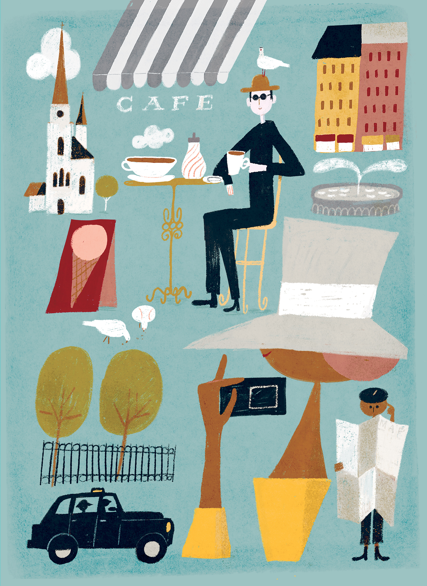
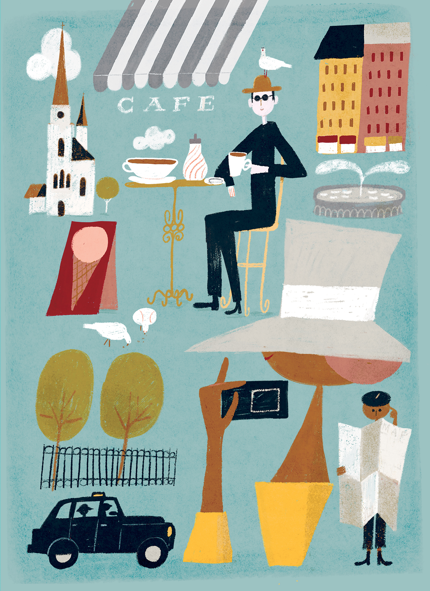

Sanna Mander
Arguably one of Finland’s most prolific illustrators working today, Sanna Mander’s cheerful work evokes catalogs and editorial illustrations of the 1960s with a contemporary twist. With that in mind, her illustrations can be applied to various products, packaging design, posters, editorial illustrations, and textiles. In 2006, she won Cannes Young Creatives and was awarded Junior of The Year in 2007 at the Finnish Best of the Year advertising and design competition. Inspired by the luscious flora and fauna surrounding her in her native Finland, Sanna’s images are mixed media odes to the unpredictable, cluttered joys of the world around her.


 
